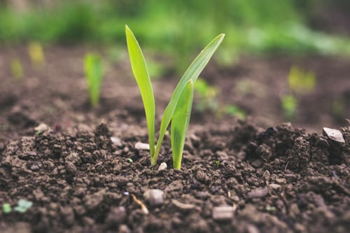

Seed Certification

Seed Certification is a quality assurance system whereby seed intended for marketing is subject to official control and inspection. At its simplest, the system certifies that a sack, packet or box of seed contains what it says on the label and that the seed was produced, inspected and graded, in accordance with the requirements of a Certification Scheme. The immediate objective of seed certification is to supply high quality seed to farmers and other growers, which is true to identity, high in purity and germination capacity and free from certain pests and diseases. Seed quality is most important in crop production, as high quality seed is essential for good crop yields and good returns, and minimises the likelihood of crop failure
Classes of Seeds
Four main classes of seeds are defined by the Association of Official Seed Certification Agency. They are:
- Nucleus Seeds
- Breeder Seeds
- Foundation Seeds
- Certified Seeds
1. Nucleus Seeds
Nucleus seeds are the basic seed class for seed production. These seeds are maintained by the breeder for further multiplication. It is produced under the direct supervision of the concerned plant breeder. It is produced based on the various crop multiplication techniques and methods. Nucleus seeds possess high percentage of genetic purity (100%).
2. Breeder Seeds
Breeder seeds are produced using nucleus seeds in the Research institutes or Universities under the supervision of a breeder. The entire production process will be monitored by the Scientists and Officers of the Seed Certification Department and by the representatives of the National Seed Corporation. The genetic purity of the breeder seeds is 100% and the tag provided for the breeder seed is golden yellow in colour.
3. Foundation Seeds
Foundation seeds are produced from the breeder seeds. It is produced at Government farms or by private seed producers. Its production can also be taken up by the farmers by getting suitable breeder seeds. Genetic purity of the foundation seeds are 99.5% and its certification tag is white in colour
4. Certified Seeds
Seeds produced from foundation seeds are known as certified seeds. The production of certified seeds is taken up by the National and State Seed Corporation, private seed companies and also by farmers. The certified seeds should possess uniformity and purity as defined by the Department of Seed Certification. The genetic purity of the certified seeds is 99% and the certification tag provided is blue in colour.